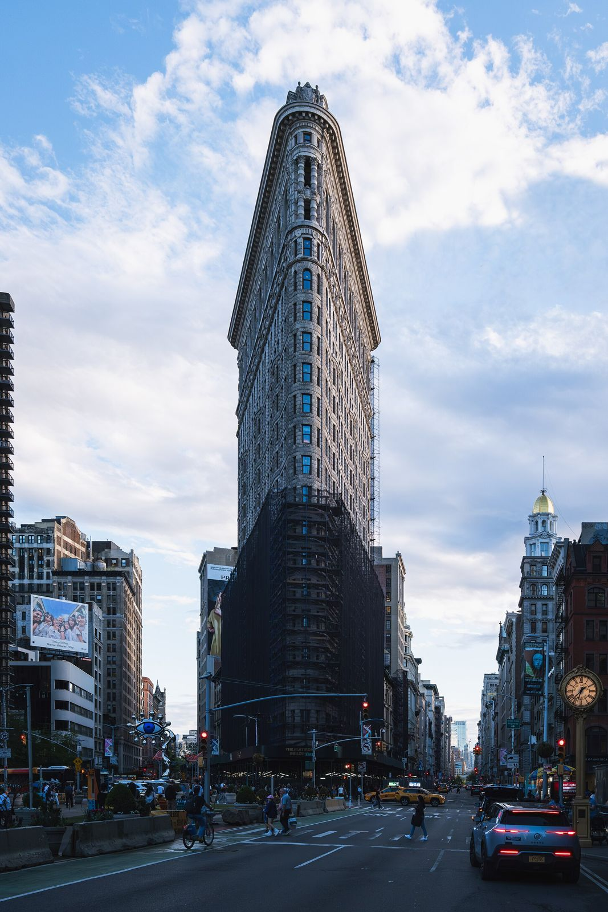

A walk from Union Square to Madison Square, nine blocks up Broadway with detours east to Gramercy Park and west to Sixth Avenue, built from Landmarks Preservation Commission reports, newspaper archives and the histories of the buildings themselves. For about forty years after the Civil War this stretch was the middle of New York. The opera house, the department stores, the theaters, the grand hotels, the arena and the Democratic machine were all within a ten-minute walk of each other.
The frame is movement. The city's center kept drifting north, and this is the one place where you can watch it happen block by block. Union Square was laid out in the 1830s and Madison Square opened in 1847. The rich, the shops and the entertainment arrived, peaked, and left for Midtown before 1930. Most of the buildings they left behind are still here, which is why the walk works.
Getting there
Start on the south side of Union Square at 14th Street. The 14 St-Union Square station is under the park and serves the 4, 5, 6, L, N, Q, R and W. From LIC take the 7 to Grand Central and the 4 or 5 one stop downtown, or the 7 to Times Square and the N, Q, R or W. The walk ends at Madison Avenue and 26th Street. The R and W stop at 23rd and Broadway by the Flatiron, and the 6 stops at 23rd and Park Avenue South.
Why this walk matters
Samuel Ruggles, a lawyer and developer, laid out two of the squares on this route in the early 1830s, Union Square and Gramercy Park, and got the city to open Irving Place and Lexington Avenue so buyers could reach his lots. He was betting the city would move north. It did, and then it kept going. The opera house on 14th Street lost its audience to a new one on 39th Street in 1883. The Ladies' Mile stores moved to Fifth Avenue and 34th Street between 1906 and 1914. The theaters went to Times Square. Madison Square Garden left Madison Square in 1925 and took the name with it.
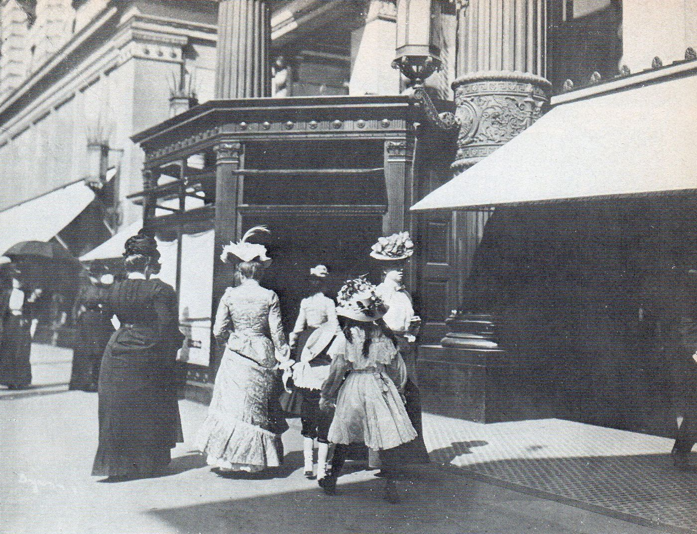

What makes this stretch unusual is that the buildings mostly stayed after their tenants left. Cast-iron stores became garment lofts and then discount chains. A church became a nightclub and then a gym. An insurance tower became a hotel, and the Flatiron is becoming apartments. A lot of this walk is about second and third lives.
Map
Timeline: 195 years in 2.5 miles
Everything on the route dates from after Ruggles drew his lots. The busiest stretch is 1854 to 1910, when almost every building here was new.
He buys the Gramercy Farm and gets Union Square enlarged into a rectangle. Union Square Park opens in 1839.
Richard Upjohn's small brownstone church on what was then a residential Sixth Avenue.
On a former potter's field and army parade ground at the city's northern edge.
The first public sculpture in the city since George III was pulled down in 1776.
One of two monuments in the city that is also a grave.
In a brownstone his family had owned for four years.
Called Eno's Folly for being so far uptown, with the first hotel passenger elevators in the country.
Perhaps a quarter of a million people rally around the Washington statue.
A cast-iron store with one of the city's first steam passenger elevators. The Ladies' Mile fills in around it.
The torch is displayed in the park to raise money for a pedestal.
At least 10,000 workers march up Broadway past a reviewing stand at Union Square.
New money, shut out of the Academy's boxes, builds its own opera house. The Academy stops opera in 1886.
He hands over the deed on New Year's Eve and keeps an apartment upstairs.
A 32-story tower with Saint-Gaudens's Diana on top.
Under budget, with a third of the money spent on sculpture and murals.
By World War I the Ladies' Mile stores are gone or going.
The original was demolished in 1916; the replica opens four years after his death.
The name moves to Eighth Avenue. New York Life builds on the site in 1928.
Tammany dedicates its new hall on Union Square, and the Con Ed tower is lit for the first time.
On the sixth floor of the Decker Building, months after the move from 47th Street.
Peter Gatien spends close to $5 million turning the Holy Communion into a club.
440 buildings on 28 blocks, designated over the real estate industry's objections.
A permanent kiosk in Madison Square Park, three years after a hot dog cart.
The Metronome starts counting down; Tammany's old hall reopens under a dome.
Scaffolding off; a London club signs a lease on the old Limelight.
The stops
1Metronome
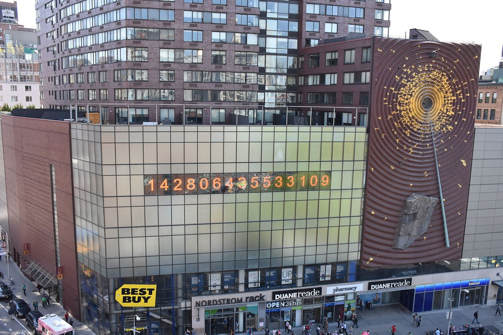

The developer of One Union Square South, the Related Companies, paid $4.2 million for this as part of the 1999 building, one of the largest private commissions of public art in the city. Kristin Jones and Andrew Ginzel designed it as a piece about time. There is a rippling brick wall with a gold-leafed hole that used to puff steam, a slab of bedrock, a long bronze cone, an enlarged bronze copy of George Washington's hand from the statue across the street, and the 15-digit clock. It was dedicated on October 26, 1999.
For twenty years most people walking past assumed the clock was broken. It was working. The seven digits on the left counted the time since midnight to a tenth of a second, the seven on the right counted the time left in the day, and the middle digit was a blur of hundredths. For a few months in 2005 it counted down to the vote on the 2012 Olympics, which New York lost to London. In 2010 and 2011 it showed wrong numbers for more than a year because the dial-up line it used to fetch atomic time had stopped working.
On September 19, 2020, the artists Gan Golan and Andrew Boyd turned it into a Climate Clock. The digits were reprogrammed to count down the years, days, hours, minutes and seconds left before the world uses up its carbon budget for 1.5°C of warming.
2Union Square Park
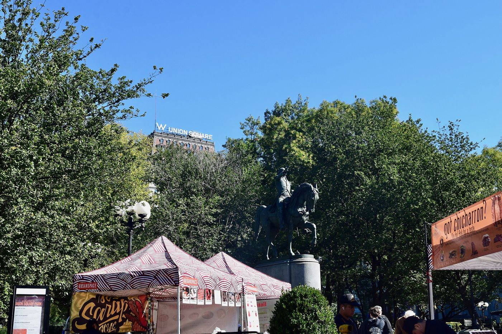

The name Union Square comes from a road junction. The Bloomingdale Road, now Broadway, met the Bowery here at an angle too sharp to build on, so the 1811 grid planners left it open. Samuel Ruggles got the city to square it off and extend it to 17th Street in 1831, and the park opened in 1839 surrounded by brick houses for the well-off. The only survivors from that first phase are the much-altered rowhouses at 862-866 Broadway, where Broadway leaves the square at 17th Street.
Henry Kirke Brown's Washington was dedicated on July 4, 1856. It was the first public sculpture put up in the city since the gilded George III at Bowling Green, which a crowd pulled down in 1776, and the first American equestrian statue cast in bronze. It shows Washington riding into the city on Evacuation Day, November 25, 1783, after the British left. On April 20, 1861, a week after Fort Sumter surrendered, the fort's flag was hung from this statue in front of a crowd estimated at a quarter of a million people, thought to be the largest gathering in North America up to then.
The square has been the city's place to assemble ever since. The first Labor Day parade, on September 5, 1882, marched up Broadway past a reviewing stand here with at least 10,000 workers, and the square was made a National Historic Landmark in 1997 mostly for that reason. Emma Goldman gave her "Free Bread" speech here in 1893. After September 11, 2001, the park filled with candles and photographs, partly because it sat just north of the closed zone below 14th Street.
Walk north through the park. Brown also made the Lincoln near the north end, unveiled in 1870. A Times critic complained that nobody had ever conceived a pair of pantaloons like the ones Brown put on Lincoln, under a Roman toga. The Greenmarket on the north and west sides started here in 1976 with seven farmers who sold out by noon. It now runs Mondays, Wednesdays, Fridays and Saturdays, year round.
3Decker Building
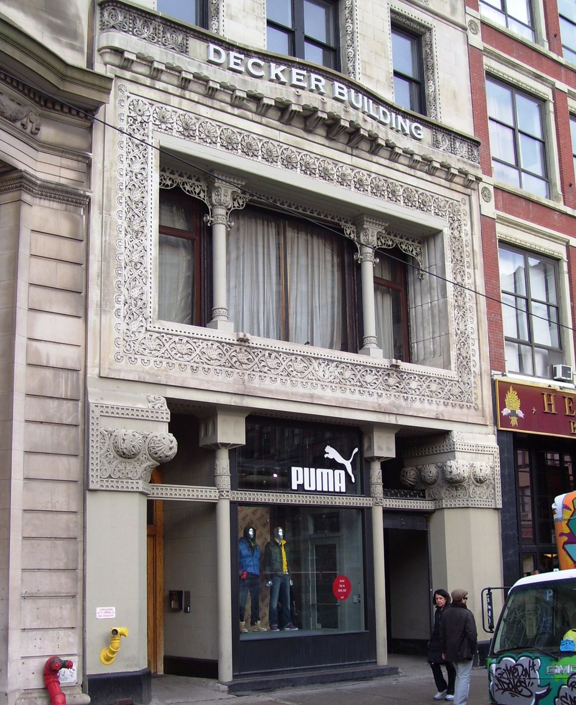

This 33-foot-wide building, covered in terra cotta with Venetian and Islamic patterns, was finished in 1892 for the Decker Brothers piano company. Pianos were one of the trades of this neighborhood, with showrooms from here up to Madison Square to sell to the people who shopped and went to the theater nearby. The architect, John H. Edelmann, was a radical anarchist. A small minaret on the roof was gone before World War II.
In 1968 Andy Warhol moved the Factory here from East 47th Street, which was about to be demolished. He rented the entire sixth floor, with a small balcony over the square, partly because Max's Kansas City, his favorite hangout, was around the corner. On June 3, 1968, Valerie Solanas came up in the elevator and shot him, seriously wounding him and also hitting the curator Mario Amaya. The Factory had run on an open-door policy. After the shooting it got a Dutch door, and the elevator was walled off so visitors had to buzz to get in. Warhol stayed until 1974, then moved a block north to 860 Broadway.
The building had other tenants with politics. In its last decades the Fraye Arbeter Shtime, the longest-running Yiddish anarchist newspaper in the world, worked out of Room 808. The building was converted to apartments in 1995.
4Tammany Hall
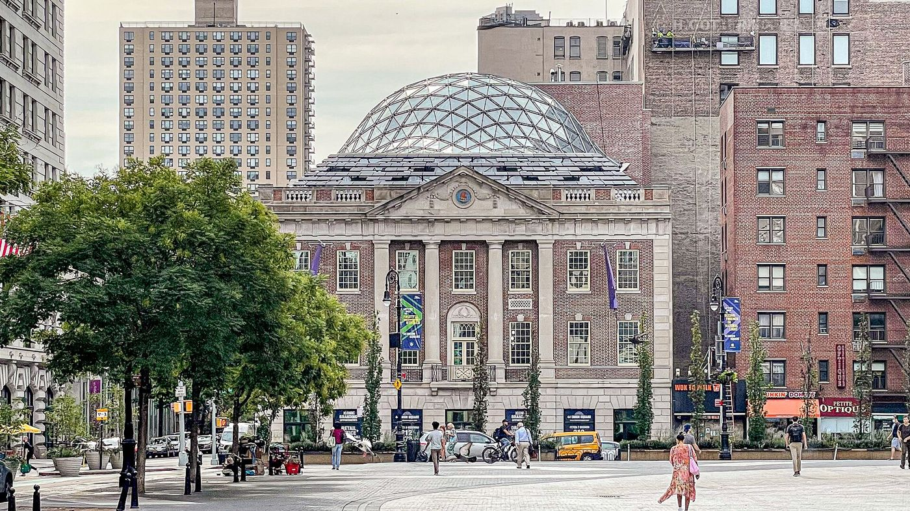
.jpg){kind=link}
The Tammany Society, the Democratic organization that ran New York politics for most of a century, had its headquarters on 14th Street next to the Academy of Music. When the gas company bought that block in the late 1920s, Tammany moved here and built this neo-Georgian "wigwam" in 1928 and 1929, loosely modeled on Federal Hall. The inscription on the 17th Street side reads 1786 THE SOCIETY OF TAMMANY OR COLUMBIAN ORDER 1928. Governor Franklin Roosevelt and Al Smith spoke at the dedication on July 4, 1929.
The timing was bad. Roosevelt, who did not think much of Tammany, opened corruption investigations into it, and then went to the White House. Fiorello La Guardia, a Republican, won the mayoralty in 1933. By 1943 the society could not afford the building and sold it to a local of the International Ladies' Garment Workers' Union. The auditorium was renamed for Roosevelt in 1947 and spent decades hosting union meetings, including the 1968 votes on the Ocean Hill-Brownsville teachers' strike. Later it was the Union Square Theatre.
The LPC landmarked it in 2013. A $50 million rebuild finished in 2020 kept the two street facades, gutted everything behind them, and added a glass dome shaped after the rising turtle shell in the Lenape creation story, with the approval of the New York City Lenape Center. Tammany was named for Tamanend, a Lenape chief. The planned anchor tenant, Slack, pulled out in 2020, and a Petco opened on the ground floor in 2023.
5Con Ed Tower and the Academy of Music
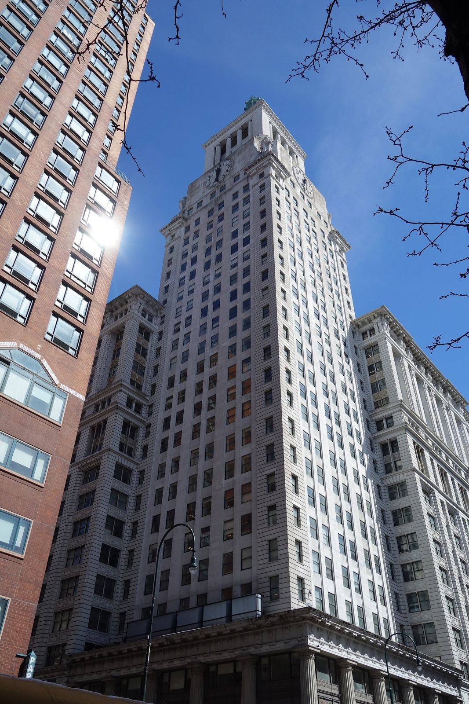
_09_-_Con_Edison_Building.jpg){kind=link}
This block held three things that defined 19th-century Union Square: the Academy of Music on the 14th Street corner, the old Tammany Hall beside it, and the gas company offices on 15th Street. The gas company, by then Consolidated Gas, took over the block in stages. Henry Hardenbergh, architect of the Plaza Hotel, built its 15th Street offices from 1911 to 1914, and seven of those floors hang from girders over a middle section that was never built to carry them. Between 1925 and 1928 the company bought the Academy and Tammany Hall, demolished both, and had Warren and Wetmore, two of the Grand Central architects, add the tower.
The Academy of Music opened on October 2, 1854, with 4,000 seats, then the largest opera house in the world. The old New York families owned its boxes and passed them down. The Vanderbilts, Goulds and Morgans could not get in, so in 1880 they founded the Metropolitan Opera, whose house on Broadway at 39th Street opened in 1883. The Academy stopped presenting opera in 1886 and went over to vaudeville and later movies. Edith Wharton set the opening scene of The Age of Innocence here, on a January evening in the early 1870s, with Christine Nilsson singing Faust to the old families in their "shabby red and gold boxes."
The tower was lit for the first time on July 4, 1929, the same day Tammany dedicated its new hall up the street. Its top is a small temple based on the Mausoleum at Halicarnassus, with urns and obelisks in memory of company workers killed in World War I. The clock faces are 16 feet wide, the bells ring every quarter hour, and the bronze lantern on top is 478 feet above the street.
6Irving Place
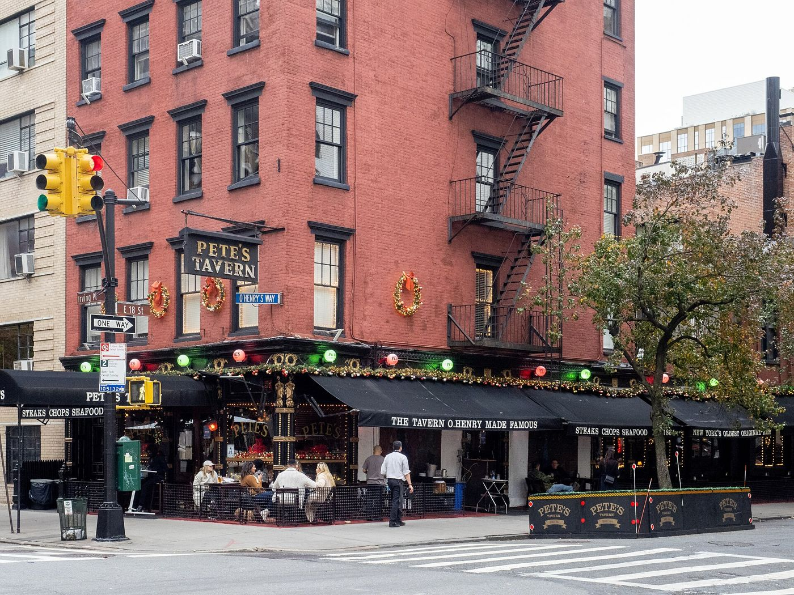
.jpg){kind=link}
Ruggles had the state create Irving Place in the 1830s to give buyers a way into his Gramercy Park lots, and named it for his friend Washington Irving. Irving never lived on it. A 1934 bronze plaque on the corner house at 17th Street, 49 Irving Place, suggests he did. The story seems to trace back to an 1897 Times article promoting the decorator Elsie de Wolfe, who lived in the house with the literary agent Elisabeth Marbury from 1892 to 1911. Next door at No. 47, Oscar Wilde took rooms during his 1882 lecture tour, about ten years before Marbury became his American agent.
William Sydney Porter, who wrote as O. Henry, lived at 55 Irving Place from 1903 to 1907, the years he was producing a story a week for the New York World's Sunday magazine. The bar on the corner of 18th Street was Healy's then, and he put it into "The Lost Blend" as Kenealy's. The tavern says he wrote "The Gift of the Magi" in the second booth from the front. There is no good evidence that he did.
The building dates from 1829. Liquor was probably sold here by the early 1850s and there was a licensed bar by 1864, which is the basis for its claim to be the oldest continuously operating bar in the city. It got through Prohibition disguised as a flower shop. Peter D'Belles bought it in 1926, and it has been Pete's since.
7Gramercy Park
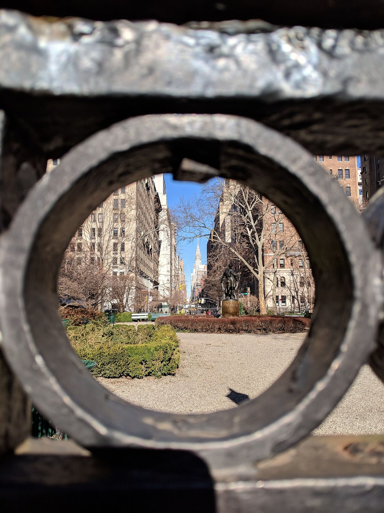

The name comes from Dutch, probably Krom Moerasje, "little crooked swamp," which became Crommessie and then Gramercy, an old English word for "many thanks." Ruggles bought 22 acres of the Gramercy Farm in 1831, spent $180,000 draining the swamp and moving about a million cartloads of earth, laid out lots around a central square, and deeded the square to the lot owners. They have held it in common ever since. The fence went up in 1833 and the gates were first locked in 1844.
It is one of two private parks in the city. Two keys go with each of the original lots, each lot pays an annual assessment of $7,500, and the locks are changed every year. As of 2012 there were 383 numbered keys in circulation. Members of The Players and the National Arts Club, guests of the Gramercy Park Hotel, and the church and synagogue on the square also get in. In 2001 the National Arts Club's president brought about 40 children from Washington Irving High School into the park, and a trustee called the police to report them for trespassing. The police declined to act, and the families' lawsuit was settled in 2003, most of the children receiving $36,000 each.
The statue in the middle is Edwin Booth, the most celebrated American Hamlet of the 19th century, put up by The Players in 1918. He was John Wilkes Booth's older brother. Before the assassination, Edwin pulled a young man to safety from between a moving train and the platform at the Jersey City station. The young man was Robert Todd Lincoln.
8National Arts Club and The Players
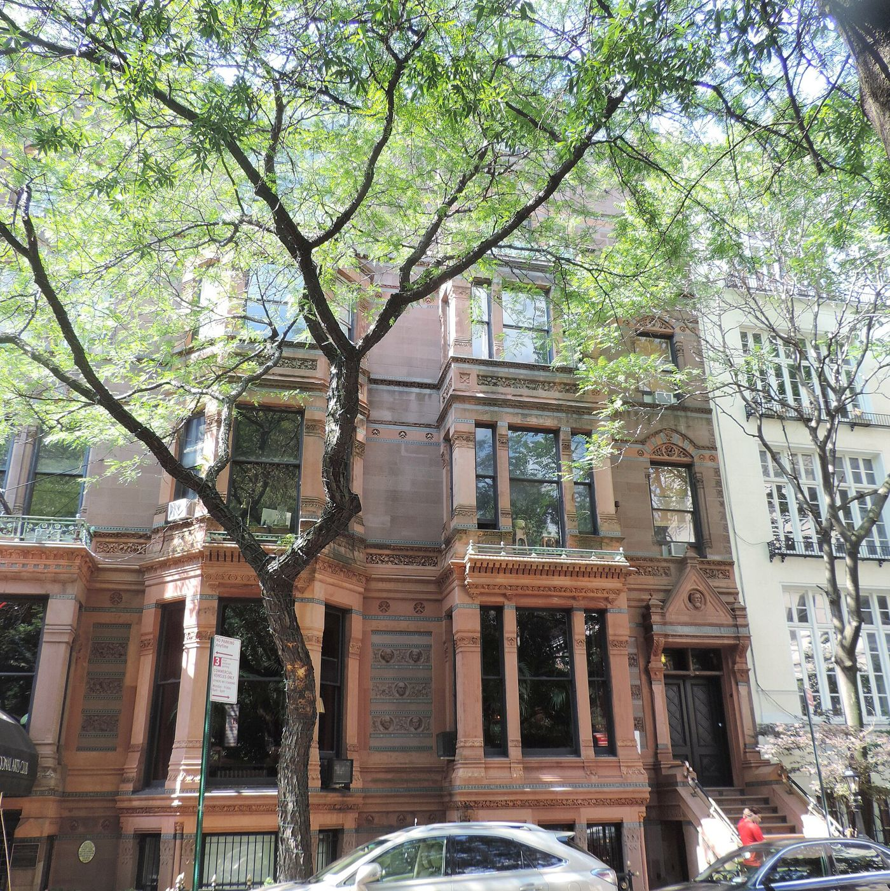

No. 15 was Samuel Tilden's house from 1860 until his death in 1886. Tilden made his name fighting the Tweed Ring and Tammany Hall, became governor in 1875, and in 1876 won the popular vote for president, then lost the electoral college to Rutherford Hayes after a commission awarded Hayes every disputed vote. The settlement is generally taken as the end of Reconstruction. From 1881 to 1884 Calvert Vaux, co-designer of Central Park, combined this house with No. 14 next door and refaced both in Victorian Gothic. Tilden installed rolling steel doors and, according to the story told ever since, an escape tunnel to 19th Street. He left most of his fortune to found a free library, and the Tilden Trust later merged with the Astor and Lenox libraries to become the New York Public Library.
The National Arts Club bought the house in 1906. It admitted women as full members from its founding in 1898, which was unusual for a New York club, and its exhibitions and programs are free to the public.
Next door, No. 16 is The Players. Edwin Booth bought the 1847 house in 1888, had Stanford White remodel it, kept a furnished apartment upstairs for himself, and gave the rest to a club meant to put actors in the same room as writers, artists and businessmen. He handed over the deed on New Year's Eve 1888 and died in his rooms here on June 7, 1893. A portrait of John Wilkes Booth hangs in Edwin's suite, with the letter Edwin wrote to the public apologizing for his brother. The club voted to admit women in 1987, and Helen Hayes became the first woman member on April 23, 1989, Shakespeare's birthday.
9Theodore Roosevelt Birthplace
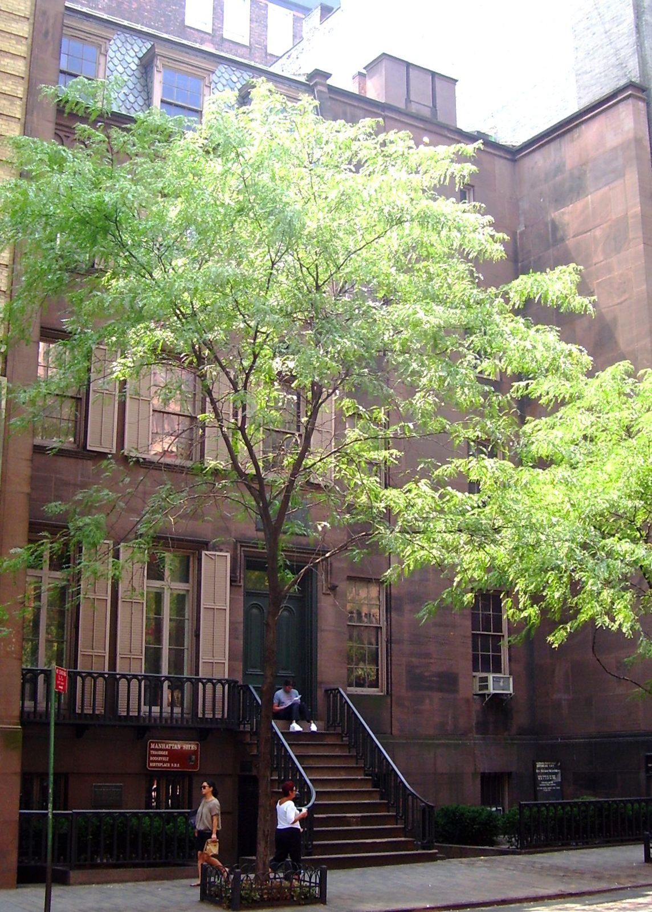

Theodore Roosevelt was born here on October 27, 1858, in an 1848 brownstone his family had bought in 1854, and lived here until 1872. By then the block was turning commercial and the family moved to West 57th Street. In his 1913 autobiography he remembered black haircloth furniture that scratched the children's bare legs, a windowless library of "gloomy respectability," and a parlor chandelier from which he once took a glass prism and hid it for days, afraid of being convicted of larceny.
The original house was demolished in 1916 for a commercial building. Roosevelt died in January 1919, and that year the Women's Roosevelt Memorial Association bought the lot. The architect Theodate Pope Riddle rebuilt the house as it had looked in 1865, using the identical twin house next door at No. 26 as her model and salvaging pieces of it before that house was taken down for the museum wing. It reopened in 1923, furnished with pieces from the original house supplied by Roosevelt's widow and sisters. The National Park Service has run it since 1963.
10Lord & Taylor Building
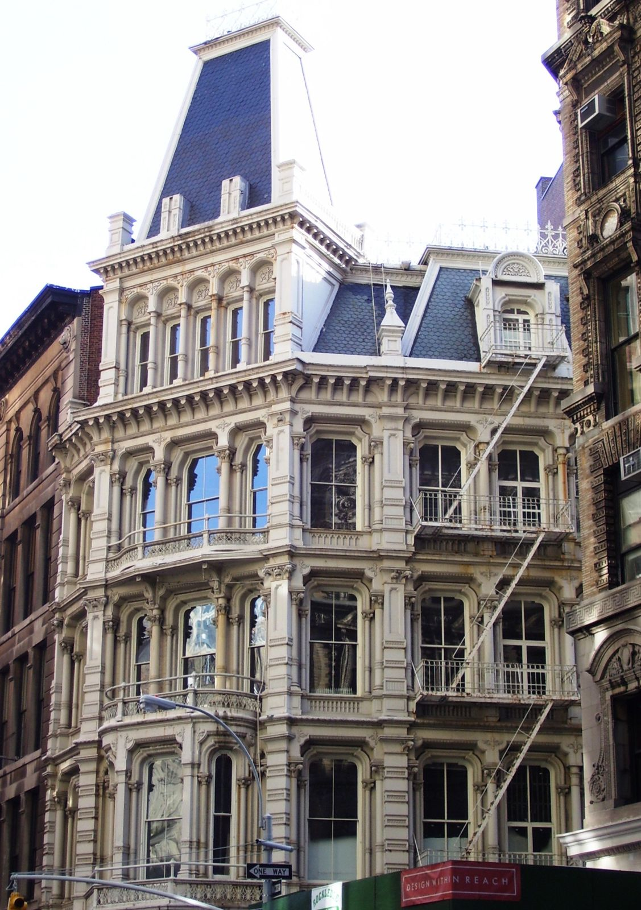

Lord & Taylor started in 1826 on Catherine Street, moved to a marble store on Broadway at Grand Street in 1859, and in 1870 moved up here, to a cast-iron building by James H. Giles in the French Second Empire style with a tall corner pavilion over a diagonal entrance. It had one of the first steam-powered passenger elevators in the city, thirteen years after the Haughwout Building on the SoHo walk installed the first safe one.
Arnold Constable had moved up Broadway in 1868 and the others followed. By the 1880s Broadway, Fifth Avenue and Sixth Avenue between 14th and 23rd Streets held B. Altman, Arnold Constable, Gorham, W. & J. Sloane, Tiffany and a dozen more, and the area got the name Ladies' Mile because women could shop here safely without a male escort. Lord & Taylor left for Fifth Avenue and 38th Street in 1914. The company closed its last stores in 2021, and its 1914 flagship has been an Amazon office since 2023.
11Siegel-Cooper and Sixth Avenue
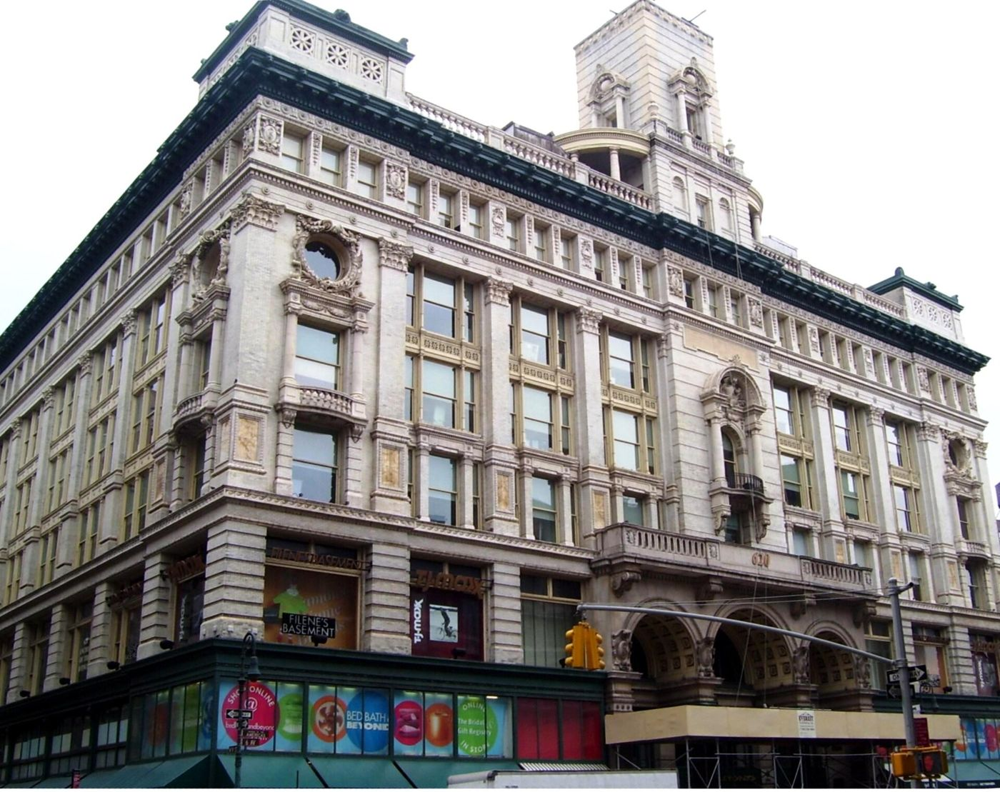

When Siegel-Cooper opened here in September 1896 it was the largest store in the world. It had 18 acres of floor space in a steel-framed building by DeLemos & Cordes, the first department store in New York built that way, and it advertised itself as the only absolutely fireproof store in the city. It sold dry goods, groceries and live plants, and had a bank, a dentist, a barber, a photo studio, a theater and a 350-seat restaurant. On the main floor was a copy of Daniel Chester French's statue The Republic in a marble fountain, and "Meet me at the fountain" became the store's slogan. At its peak it employed more than 3,000 people, most of them women.
Sixth Avenue was the cheaper half of the Ladies' Mile. The elevated train opened over it in 1878 and brought shoppers who could not afford a carriage. B. Altman's store stood across the avenue at 621, and Hugh O'Neill's store, with its gilded corner domes, and Adams Dry Goods still stand just north, between 20th and 22nd Streets. DeLemos & Cordes went on to design Macy's at Herald Square, which took the largest-store title. Siegel-Cooper went bankrupt in 1915 and closed in 1917. The building was a military hospital in World War I, then a warehouse and later an NBC scene shop, until it became one of the first old emporia here to reopen for retail. TJ Maxx and Marshalls are inside now.
12Church of the Holy Communion / the Limelight
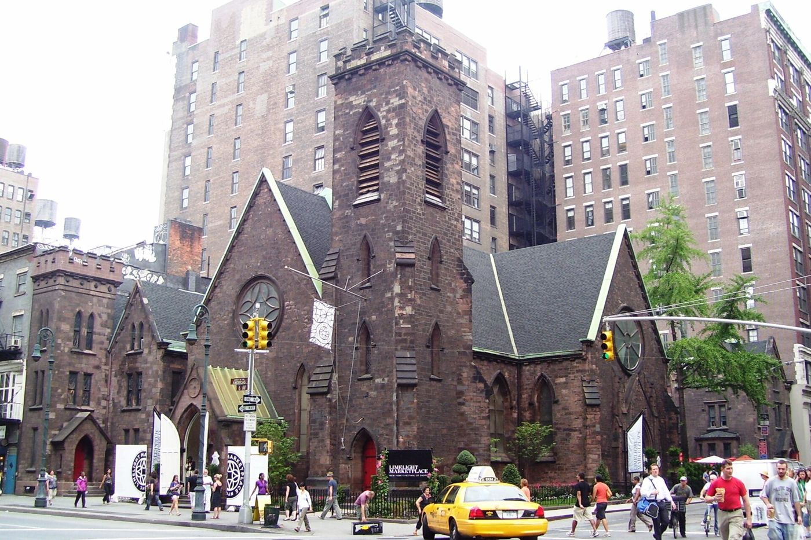

Richard Upjohn, who also designed Trinity Church on Wall Street and the base of the Washington statue in Union Square, built this from 1844 to 1846. It was the first asymmetrical Gothic Revival church in the country, modeled on a small English parish church, with the brownstone blocks deliberately laid at random. Its founder, William Muhlenberg, believed Gothic was the true architectural expression of Christianity. Sixth Avenue was lined with houses when it was built and with department stores forty years later.
The parish shrank with the neighborhood and merged with Calvary and St. George's in 1975. The building was leased to a cultural center, then sold to a drug rehabilitation program, which sold it to the club owner Peter Gatien. He spent close to $5 million on it and opened the Limelight in November 1983. Through the 1990s it was one of the centers of New York club life, and of a federal drug investigation. Gatien was acquitted of drug charges in 1998. The club reopened as Avalon in 2003 and closed for good in 2007.
Since then it has been a shopping arcade, then a gym, then empty again. In late September 2026 the London private club Maison Estelle signed a lease for about 30,000 square feet, with a restaurant planned.
13Flatiron Building
The triangle comes from Broadway cutting across the grid. For decades the lot belonged to Amos Eno, who also built the Fifth Avenue Hotel across the street and turned down every offer to sell. People were calling it Eno's flatiron years before there was a building. After Eno died in 1899 the lot was sold, and in 1901 Harry Black of the Fuller Company, the first true general contractor, bought it for about $2 million and hired Daniel Burnham of Chicago. The building opened on October 1, 1902, officially as the Fuller Building, but even Burnham's drawings were labeled Flatiron and the name stuck.
New Yorkers called it Burnham's Folly and expected the wind to knock it over. The wind caused trouble of another kind. Gusts swirling around the prow lifted women's skirts on 23rd Street, men gathered to watch, and the police who moved them along are supposed to have given the city the phrase "23 skidoo." In 1903 the wind blew a bicycle messenger into the street, where he was killed. Alfred Stieglitz photographed the building in a snowstorm that year and said it seemed to be moving toward him "like the bow of a monster ocean steamer." Edward Steichen photographed it at dusk in the rain in 1904.
For most of the 20th century it was offices, including St. Martin's Press and Macmillan from 1959. The men's rooms are on even floors and the women's on odd ones, because the women's rooms were added later. Ownership split among partners who could not agree, and in March 2023 a court-ordered auction on the courthouse steps was won by a 31-year-old named Jacob Garlick with a $190 million bid. He never paid the $19 million deposit. The majority owners took the building at a second auction that May for $161 million and are converting it to condominiums. The scaffolding came off in early 2026, and by August fourteen of the 36 apartments had sold.
14Worth Monument and the Fifth Avenue Hotel site
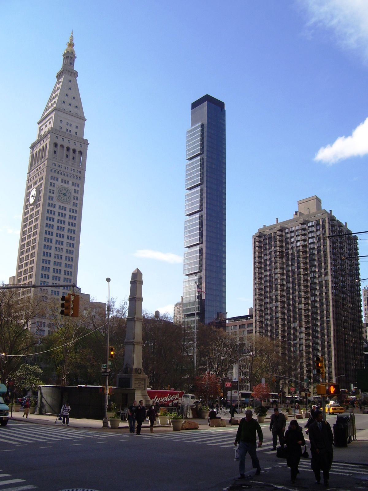

The building on the west side of Fifth Avenue between 23rd and 24th Streets, 200 Fifth Avenue, stands where Amos Eno's Fifth Avenue Hotel opened in 1859. It was so far north that people called it Eno's Folly. It had the first passenger elevators in any American hotel, steam-driven and nicknamed the vertical railroad, and they turned the top floors from the cheapest rooms into the best. The Prince of Wales stayed in 1860, which told New York society the neighborhood was acceptable, and every president from Buchanan to McKinley visited. In the 1890s the Republican boss Thomas Platt held court in a hallway called the Amen Corner. It closed in 1908. Its replacement became the International Toy Center, home of the Toy Fair until 2005, and Eataly has occupied the ground floor since 2010.
The obelisk on the island at 25th Street marks the grave of General William Jenkins Worth, who fought in the War of 1812, the Seminole Wars and the Mexican War. Fort Worth, Texas, and Worth Street downtown are named for him. He was reburied here in 1857, and the monument is one of only two in the city that double as a tomb. The other is Grant's.
15Madison Square Park
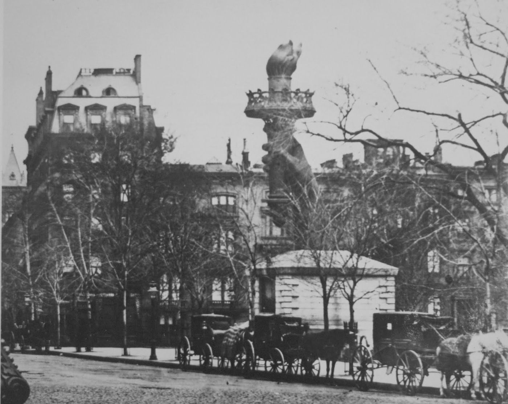

The park opened on May 10, 1847, on ground that had been a potter's field and then an army parade ground. It took its name indirectly from a roadhouse called Madison Cottage at Fifth and 23rd. In the early 1840s amateur ballplayers used a sandlot at 27th and Madison, and the group that became the Knickerbocker Base Ball Club, whose rules shaped the modern game, started there before development pushed them to Hoboken.
From 1876 to 1882 the arm and torch of the Statue of Liberty stood in this park, displayed to raise money for a pedestal that nobody had yet agreed to pay for. Augustus Saint-Gaudens's Admiral Farragut at the north end, dedicated in 1881 on a base designed by Stanford White, was Saint-Gaudens's first major work. During the Blizzard of 1888, Senator Roscoe Conkling refused to pay a cab driver $50, walked home through the snow, collapsed in the park and died five weeks later. He has a statue here too. On December 24, 1912, the park lit the first community Christmas tree in America.
By the 1990s the south end was unrestored and mostly avoided. A fundraising campaign led to the Madison Square Park Conservancy, which Danny Meyer, whose Union Square Cafe was a few blocks south, helped start. In 2001 his staff ran a hot dog cart here as part of an art installation. In July 2004 it became a permanent kiosk with burgers and shakes, and the line has rarely gone away. Shake Shack is now a public company with hundreds of locations. This is the first one.
16Met Life Tower
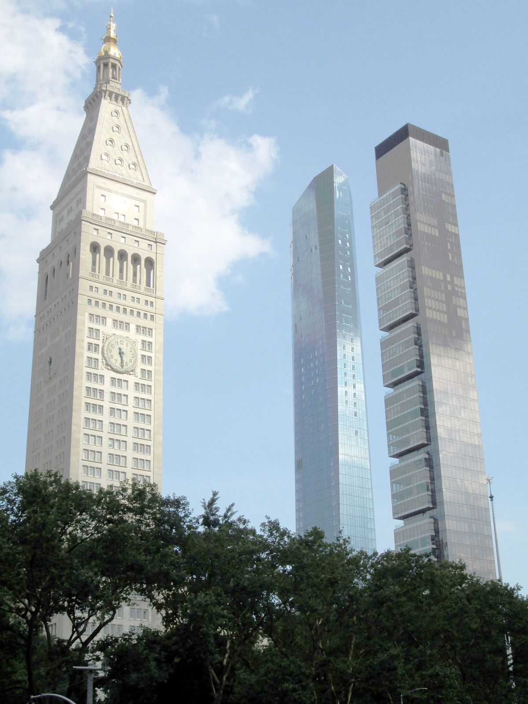

Metropolitan Life spent the 1890s and 1900s buying up this block. The last holdout was the Madison Square Presbyterian Church on the corner, whose minister, Charles Parkhurst, had preached the 1892 sermons against police corruption and Tammany that led to the state's Lexow investigation. In 1906 the company bought the church lot and gave the congregation land across 24th Street, where Stanford White built them a new church. Then it put up a 700-foot tower modeled on the campanile of St. Mark's in Venice, finished in 1909. It was the tallest building in the world until the Woolworth Building passed it in 1913.
The clock faces are 26.5 feet across, the largest in the world when they were built, and each minute hand weighs about 1,000 pounds. The four bells in the cupola were the highest in the world when they were hung. In 1908 the New York Herald mounted a searchlight in the girders to announce the presidential election: a beam to the north for a Republican win, to the south for a Democrat. It pointed north, for Taft.
White's church lasted thirteen years. The company bought that lot too and demolished the church in 1919. The block is now the Met Life North Building, designed as a 100-story tower and stopped at its 28-story base by the Depression. The clock tower lost most of its ornament in a 1960s renovation and has been the Edition hotel since 2015.
17Appellate Division Courthouse
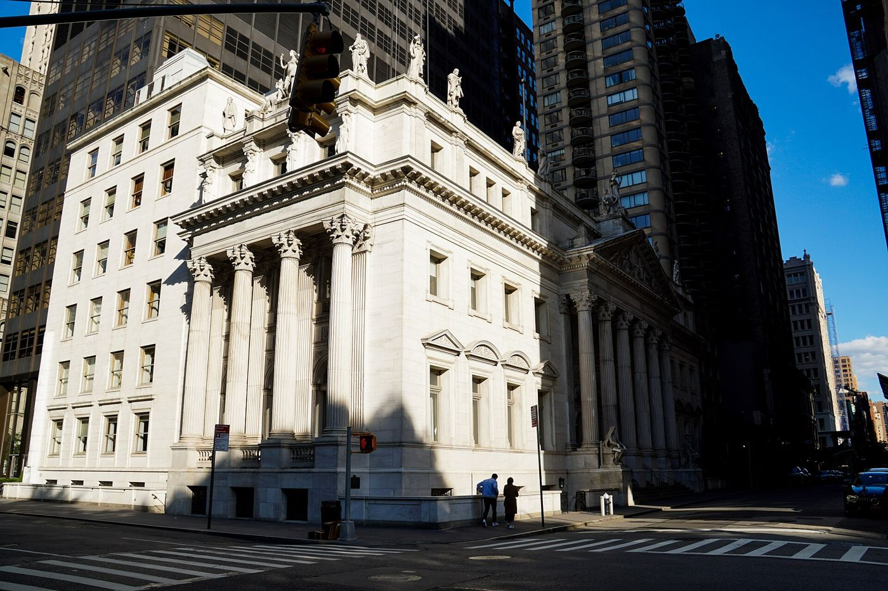

The Appellate Division of the State Supreme Court, First Department, hears appeals from Manhattan and the Bronx. Its building is three stories of marble by James Brown Lord, opened on January 2, 1900. It cost $633,768, under its $700,000 budget at a time when the city's bridges and municipal buildings were running far over. About a third of the money, $211,300, went on art: sixteen sculptors led by Daniel Chester French outside and ten muralists inside.
The statues on the roofline are lawgivers. Along 25th Street they include Zoroaster, Alfred the Great, Lycurgus, Solon, Saint Louis, Manu and Justinian. There was another at the west end, a Muhammad by Charles Albert Lopez. In 1955 it was removed after protests from Muslim-majority countries, since Islamic tradition discourages images of the prophet. The remaining statues were each moved one pedestal west, and the easternmost pedestal stood empty for 68 years. In 2023 Shahzia Sikander's NOW, a gold female figure, was installed on it.
At the north end of the 1955 annex is Harriet Feigenbaum's Holocaust memorial, a marble column rising from a map of Auschwitz, conceived in 1986 by the court's own presiding justice as a symbol of injustice beside the symbols of justice.
18New York Life Building and the Garden site
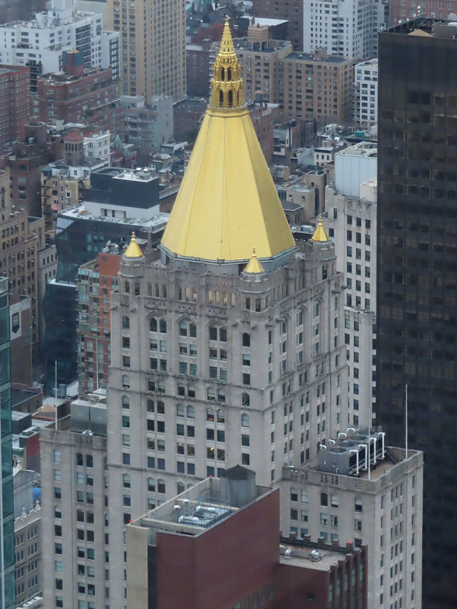

This block was the passenger depot of Cornelius Vanderbilt's Harlem railroad until 1871. P. T. Barnum turned it into a circus hippodrome, the bandleader Patrick Gilmore turned it into a concert garden, and in 1879 William Vanderbilt renamed it Madison Square Garden. The first Westminster Kennel Club Dog Show was held there in 1877. In 1890 a syndicate including J. P. Morgan and Andrew Carnegie replaced the drafty old shed with a Stanford White building that had the largest hall in the world, a theater, a concert hall, a roof garden, and a 32-story tower modeled on the Giralda in Seville. On top stood Saint-Gaudens's gilded Diana, turning with the wind. A later version of her is in the Philadelphia Museum of Art.
White kept an apartment in the tower. On June 25, 1906, during a show on the roof garden, the millionaire Harry Thaw walked up to him and shot him dead. Thaw's wife, the actress Evelyn Nesbit, had said White raped her when she was 16. The press called the case the trial of the century, and at his second trial Thaw was found not guilty by reason of insanity.
The Garden never made money. It hosted the 1924 Democratic convention, which took 103 ballots to nominate John W. Davis, and was torn down the next year. The name moved to Eighth Avenue and 50th Street in 1925 and to Penn Station in 1968. New York Life built its headquarters here in 1928 to a design by Cass Gilbert of the Woolworth Building, with a pyramid roof now covered in 25,000 clay tiles dipped in 22-karat gold leaf. The company's president called it a cathedral of insurance.
Eat and drink: Danny Meyer's neighborhood, and the bars before him
One restaurateur shaped the food on this route more than anyone else. Danny Meyer opened Union Square Cafe in 1985, the year the park reopened after a cleanup from its worst decade, then Gramercy Tavern, Eleven Madison Park and the first Shake Shack. The two old bars on the route were pouring for close to a century before any of it.
- Pete's Tavern 129 E 18th St, at stop 6 · bar since 1864
O. Henry's local, a flower shop during Prohibition, and in its claim the oldest continuously operating bar in the city. Go for the room and the history. - Old Town Bar 45 E 18th St, between stops 2 and 6 · since 1892
A 55-foot marble and mahogany bar under a 16-foot pressed-tin ceiling, a dumbwaiter from the upstairs kitchen, and 1910 urinals in the men's room. It was in the opening of Late Night with David Letterman and in House of Pain's "Jump Around" video. Order a burger. - Union Square Cafe 101 E 19th St, near stop 6 · since 1985
Meyer's first restaurant, at 21 East 16th Street until the lease ran out; it reopened here in 2016. - Gramercy Tavern 42 E 20th St, near stop 9 · since 1994
Opened by Meyer and Tom Colicchio. The front tavern room takes walk-ins. - Eataly 200 Fifth Ave, at stop 14 · since 2010
The Italian food hall on the ground floor of the old Toy Center, where the Fifth Avenue Hotel stood. - Shake Shack Madison Square Park, at stop 15 · since 2004
The original kiosk. Go mid-afternoon on a weekday. - Eleven Madison Park 11 Madison Ave, at stop 16 · since 1998
In the Art Deco ground floor of the Met Life North Building. Meyer opened it and sold it in 2011 to Daniel Humm and Will Guidara. Book weeks ahead. - Union Square Greenmarket Union Square, at stop 2 · since 1976
Mondays, Wednesdays, Fridays and Saturdays, 8 a.m. to 6 p.m. The cider and apples in October are the reason to start this walk in the morning.
After
The R and W at 23rd and Broadway and the 6 at 23rd and Park Avenue South are both a few minutes away. The obvious next walk goes north from here, following the stores that left the Ladies' Mile for 34th Street: B. Altman's 1906 building on Fifth Avenue and Macy's at Herald Square.